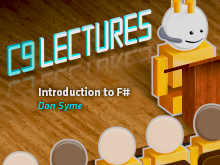
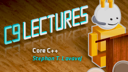
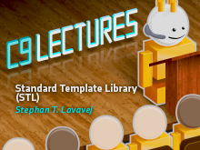
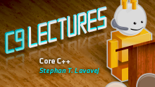
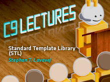
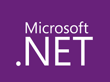
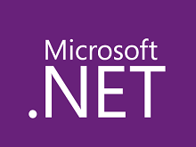

.NET Debugging for the Production Environment (12)#
Beckman Meijer Overdrive (3)#
C9 Lectures: Dr. Don Syme - Introduction to F# (3)#
 C9 Lectures: Erik Meijer - Functional Programming Fundamentals (13)#
C9 Lectures: Erik Meijer - Functional Programming Fundamentals (13)#
 C9 Lectures: Jim Radigan - Inside Auto-Vectorization (1)#
C9 Lectures: Jim Radigan - Inside Auto-Vectorization (1)#
 C9 Lectures: Mahmoud Saleh - Advanced CRT (2)#
C9 Lectures: Mahmoud Saleh - Advanced CRT (2)#
 C9 Lectures: Stephan T Lavavej - Advanced STL (6)#
C9 Lectures: Stephan T. Lavavej - Core C++ (10)#
C9 Lectures: Stephan T. Lavavej - Standard Template Library (STL) (10)#
Microsoft Campus Tours (20)#
Do More With Your Microsoft Lumia Phone (5)#
C9 Lectures: Stephan T Lavavej - Advanced STL (6)#
C9 Lectures: Stephan T. Lavavej - Core C++ (10)#
C9 Lectures: Stephan T. Lavavej - Standard Template Library (STL) (10)#
Microsoft Campus Tours (20)#
Do More With Your Microsoft Lumia Phone (5)#
 DSL DevCon 2009 (11)#
FoxIE (5)#
The History of Microsoft (29)#
DSL DevCon 2009 (11)#
FoxIE (5)#
The History of Microsoft (29)#
 Microsoft Research Luminaries (19)#
Microsoft Research Luminaries (19)#
 Microspotting (6)#
.NET Framework (6)#
PerfView Tutorial (16)#
Microspotting (6)#
.NET Framework (6)#
PerfView Tutorial (16)#
 Show Us Your Tech (12)#
Show Us Your Tech (12)#
 Six Essential Tips for Async (7)#
Six Essential Tips for Async (7)#
 The Visual Studio Documentary (12)#
The Visual Studio Documentary (12)#
-Responsive-Web-Design (8)#
10-porad-przy-wdrazaniu-Windows-10-z-ADK (4)#
1C-Development (4)#
1C-Hosting-at-Microsoft-Azure-cloud-platform (2)#
25-Kasm-Windows-10-Teknik-Lansman (6)#
5-Entrepreneur-Myths-Busted (1)#
A-Developers-Guide-to-Windows-10 (22)#
A-LAB-Video-Series-Vietnamese (5)#
A-Lap-Around-Azure-Websites (8)#
academic-jp (12)#
Active-Directory-Depannage-et-mecanismes-internes (5)#
Active-Directory-verwalten-mit-Windows-Powershell (4)#
Active-Directory-Video-Series (3)#
Adaptive-Design-in-Windows-10 (4)#
Adding-Microsoft-Azure-Search-to-Your-Websites-and-Apps (8)#
Adding-Style-with-CSS (6)#
Administering-Office-365-for-Small-Business (11)#
Advanced-MonoGame-for-Windows-Phone-and-Windows-Store-Games (3)#
Advanced-PowerShell-Desired-State-Configuration-DSC-and-Custom-Resources (7)#
Advancede-Threat-Analytics-Setup (6)#
aer (10)#
AgileScale-Visione-olistica-del-Valore (3)#
AKS-Bootcamp-From-zero-to-container-hero (49)#
Aktywacja-benefitow-Microsoft-Partner-Network (3)#
All-About-Microsoft-Azure-Operational-Insights (5)#
ALM-Potpurri (25)#
An-Introduction-to-Office-365-for-Start-ups--Scale-Ups--Tips-and-Tricks-for-Entrepreneurs (3)#
Anaisis-de-Datos-con-R (4)#
Anlisis-de-datos-con-Power-BI-Nivel-Intermedio (4)#
Anlisis-de-Datos-con-R-Nivel-Intermedio (2)#
Another-Game (1)#
APAC-DevSquad-Showcase (15)#
APAC-Windows-10-Week-2016 (10)#
App-Developer-Stories (1)#
App-Development-using-Office-365-APIs-in-Arabic (5)#
Application-Innovation-Immersion (7)#
Application-Lifecycle-Management-ALM-con-Visual-Studio-Online (5)#
Application-Performance-Monitoring (4)#
Aprendiendo-a-Programar-20 (12)#
Architecting-Microsoft-Azure-Solutions (6)#
Ascend-Videos (3)#
ASPNET-Core-101 (13)#
Aufbau-einer-Private-Cloud-mit-Windows-Server-2012-R2-Hyper-V-System-Center-und-dem-Windows-Azure-Pa (38)#
Automate-Workloads-with-System-Center-Orchestrator (15)#
Automation-2-0 (7)#
Automatiser-la-migration-vers-Exchange-Online-et-SharePoint-Online (3)#
Automatisierte-Konfiguration-Azure-Ueberblick (5)#
Automatyzacja-Microsoft-Azure (3)#
Azure-101-Jak-napisa-bardzo-skalowaln-aplikacj-na-Azure-dziki-Service-Bus (4)#
Azure-Active-Directory-Core-Skills (6)#
Azure-Active-Directory-Decouverte-des-fonctionnalites-Basic-et-Premium (9)#
Azure-Active-Directory-desde-cero (4)#
Azure-Active-Directory-Habilidades-bsicas (4)#
Azure-Active-Directory-Partner-Videos (7)#
Azure-Active-Directory-Premium (3)#
Azure-Active-Directory-Videos-Demos (31)#
Azure-AD-Identity (6)#
Azure-alapok-rendszergazdak-szamara (9)#
Azure-Analysis-Services (5)#
Azure-backend-for-Android-and-iOS-apps-rus (5)#
Azure-backend-for-Android-and-iOS-apps (5)#
Azure-Backup (48)#
Azure-Chinese-How-To-Video (53)#
Azure-connected-services-with-Cordova (7)#
Azure-Data-Lake (5)#
Azure-Data-Platform (13)#
azure-day-0116 (4)#
Azure-Digital-Marketing (4)#
Azure-for-Students-Vietnamese (3)#
Azure-Friday-TW (2)#
Azure-Fundamentals (8)#
Azure-HDInsight-jumpstart-demo (3)#
Azure-Hybrid-Network (5)#
Azure-i-Internet-of-Things-alarmy-poar-i-okolice-Event-Hub-z-Netduino-i-okolicami (6)#
azure-jumpstart-2015 (6)#
Azure-made-easy (4)#
Azure-Media-Services (1)#
Azure-Minutes (3)#
Azure-Mobile-Apps-Deep-Dive-in-Arabic (4)#
Azure-Mobile-Service (1)#
Azure-Mobile-Services-per-sviluppatori-iOS (1)#
Azure-Multi-Factor-Authentication (5)#
Azure-Networking-Deep-Dive-EMEA-TZ (7)#
Azure-Networking-Fundamentals-for-IT-Pros (4)#
Azure-Online-Seminarium (8)#
Azure-Przenoszenie-zasobow-pomiedzy-subskrypcjami (4)#
Azure-RemoteApp-Habilidades-Basicas (3)#
Azure-RemoteApp (3)#
Azure-Resource-Manager (4)#
Azure-Site-Recovery (15)#
azure-skill-billing (2)#
azure-skill-quicksetup (2)#
azure-skill-subscription (5)#
azure-skill-vm (2)#
Azure-Solutions-Training (4)#
Azure-SQL-DW (4)#
Azure-SQL-for-Beginners (65)#
Azure-srodowiska-DevTest (4)#
Azure-Stream-Analytics (1)#
Azure-Tips-and-Tricks-Static-Web-Apps (17)#
azure-vm-jumpstart (7)#
Azure-WebSite-archiwizacja-i-odtwarzanie-stron (3)#
AzureDataLake (14)#
AzureDevOpsJP (8)#
AzureML-20151127 (4)#
AzureOpenness (22)#
Azurove-okenko (7)#
Backup-in-the-Cloud-Microsoft-Azure (5)#
Basics-of-Hyper-V-in-Windows-Server-2012-R2 (4)#
BASTA-2016-Konferenz-fuer-NET-Windows-Open-Innovation (7)#
Becoming-a-Visio-2013-Power-User-Part-2 (3)#
Becoming-a-Visio-2013-Power-User-Part-3 (4)#
Beginners-Series-to-Blazor (11)#
Beginners-Series-to-Blockchain (20)#
Beginners-Series-to-Dev-Containers (8)#
Beginners-Series-to-Django (24)#
Beginners-Series-to-FSharp (12)#
Beginners-Series-to-JavaScript (51)#
Beginners-Series-to-NodeJS (26)#
Beginners-Series-to-Rust (35)#
Beginners-Series-to-Serverless (16)#
Beginners-Series-to-Unity (7)#
Beginners-Series-to-VS-Tooling-for-Unity-Developers (5)#
Beginners-Series-to-Vuejs (16)#
Beginners-Series-to-Web-APIs (18)#
Benefity-programu-DreamSpark (3)#
Benefity-Sofware-Assurance (8)#
Bezpieczestwo-chmury-publicznej-mity-i-fakty (3)#
Big-Bet-Education-follow-up-School-in-the-cloud (2)#
Big-Data-Analytics-with-HDInsight (6)#
Big-Data-with-the-Microsoft-Analytics-Platform-System (6)#
BizSpark-Startup-Chats (1)#
BizSpark-StartUp-Stories (53)#
Blend-for-Visual-Studio-TV (1)#
Book-Keeping-For-Small-Business (1)#
Bootcamp-Cloud-Computing-and-Serverless (84)#
Bring-Linux-and-Open-source-solution-to-Azure (7)#
Build-15-Tour (1)#
BUILD-Countdown-2015 (25)#
Build-Labs (11)#
Build-Repeat-Sverige (7)#
Build-Tour-Amsterdam (6)#
Build15Tour (2)#
Building-Azure-Backed-Mobile-Apps-Arabic (2)#
Building-Infrastructure-in-Azure-using-Azure-Resource-Manager (4)#
Building-Recommendation-Systems-in-Azure (5)#
Business-Intelligence-LATAM (33)#
Business-Services-that-should-be-Considered-for-Startups (1)#
C-60-Programming-Language (1)#
C-Advanced (8)#
C-De-cero-a-diez (4)#
C-Development-Russian (24)#
CDirectX-Game-Development-Animations-and-Advanced-Game-AI (4)#
CDirectX-Game-Development-Blending-and-Models (4)#
CDirectX-Game-Development-Fun-with-Sounds-and-Shaders (4)#
CDirectX-Game-Development-Skyboxes-and-Porting-DX11-to-112 (4)#
Cechy-Microsoft-Azure (12)#
Challenging-Time-Present-Great-Opportunities (1)#
Chiffrage-de-projet-Azure (5)#
China-MVP-Webcast (12)#
ching-uwp (2)#
Choose-to-Code (27)#
Ciencia-de-Datos-y-Machine-Learning (5)#
Cloud-Azure-Introduction-to-the-web-services-for-development (5)#
Cloud-DevCamp (8)#
Cloud-Enable-a-Windows-Presentation-Foundation-LOB-App (5)#
cloud-girl (1)#
Cloud-Hosting-mit-Azure-App-Service-Web-Apps (3)#
Cloud-Platform-MVP-Roadshow (5)#
Cloud-Services-fr-Schler-und-Studenten (5)#
CloudCamp-20150918 (4)#
Cmputo-Cognitivo (6)#
CMR-Fundamentals-for-SMEs (4)#
Co-daje-subskrypcja-MSDN-programiscie (1)#
Co-piszczy-w-Twojej-infrastrukturze-Operations-Management-Suite-prawd-Ci-powie (5)#
codenamegoa (21)#
CODExist-The-Birth-of-Bot (9)#
Coding-for-Kinect-with-Scratch (7)#
cognitive (2)#
Componentes-bsicos-de-una-solucin-de-Big-Data (4)#
Conference-Bot-Demo (1)#
Connect2016conference (3)#
ConnectOn-Demand (42)#
Construct-2-Advanced-Game-Development (4)#
Construction-of-Linux-clusters-in-Azure (4)#
Construyendo-la-estrategia-en-la-nube-de-tu-empresa (3)#
Conversations-with-Startups (5)#
Corporate-devices-How-to-ensure-the-protection-of-data-and-applications (4)#
Cortana-and-the-Speech-SDK (4)#
Cortana-Intelligence-Suite-Education (51)#
Cortana-Intelligence-Suite (1)#
CPP-Developer-Day (2)#
Crea-tu-primer-videojuego-en-Construct-2 (6)#
Create-an-application-using-App-Studio (8)#
Creating-2D-Games-with-GameMaker-Advanced-Techniques (5)#
Creating-A-Digital-Identity (1)#
Creating-a-Universal-App-in-VB (3)#
Creating-applications-of-virtual-and-extended-reality (10)#
Creating-Virtual-and-Augmented-Reality-Applications-on-Windows-Platform-en (9)#
Creating-Windows-Phone-and-Windows-Store-Games-with-MonoGame (4)#
Creating-Your-First-2D-Game-with-GameMaker (5)#
Cross-Platform-Visual-Studio-Web (6)#
CSharp-101 (19)#
CSharp-Fundamentals-for-Absolute-Beginners (25)#
cspdev (15)#
Curso-de-Camtasia-Studio (11)#
Curso-de-CSharp-Programacao (31)#
Curso-de-Windows-10 (17)#
Customer-Solutions-Workshops (7)#
Darmowa-chmura-dla-subskrybentw-MSDN (1)#
Darmowy-kurs-Skype-dla-firm (10)#
Data-Platform-Solutions-in-the-Era-of-Digital-Transformation-Arabic (4)#
Data-Platform-Solutions-in-the-Era-of-Digital-Transformation (4)#
Data-Science-Student-Challenge (2)#
DataAnalysis-JPStudents (6)#
Datensicherung-mit-Azure-Backup (3)#
Dcouverte-de-Power-BI (5)#
decode2016-countdown (17)#
Deep-Dive-Building-Blocks-and-Services-of-SharePoint (8)#
demonstration-techniques-jp (1)#
Deploying--Managing-SharePoint-2013-with-PowerShell (6)#
Deploying-Office-365-ProPlus (5)#
Desarrollador-Windows-10 (4)#
Descubre-Wave-Engine-tutorialess (10)#
Design-solutions-Microsoft-Azure-rus (6)#
Designing-Solutions-for-SQL-Server (5)#
Desktop-and-NET-Core-101 (3)#
Dev-Coffee-BR- (1)#
Dev-Coffee-Break (13)#
Dev-Intro-to-Data-Science (28)#
Developer-Productivity-Whats-New-in-C-6 (5)#
Developers-Guide-to-Windows-10-Preview (14)#
DevelopersHome (6)#
Developing-Advanced-2D-Games-with-HTML5 (4)#
Developing-Games-with-Marmalade-and-C-for-Windows-and-Windows-Phone (6)#
Developing-Microsoft-Azure-Solutions (6)#
Developing-Microsoft-SQL-Server-Databases (6)#
Developing-Solutions-with-Azure-DocumentDB (8)#
Developing-Universal-Windows-Apps-with-HTML-and-JavaScript-CHT (12)#
Developing-Windows-10-Applications-with-C (3)#
DevManiacs (7)#
DevMov (4)#
DevOps--Visual-Studio-Team-Services--Team-Foundation-Server (2)#
DevOps-for-beginners (7)#
DevOps-for-the-Bot-Framework (6)#
DevOps-Fundamentals (8)#
DevOps-para-IT-Pros-y-desarrolladores-en-espaol (3)#
DevOps-Release-Management (5)#
Devops-temelleri (2)#
DevOpsLatam (3)#
dicas-e-boas-praticas-com-CSharp (3)#
Digital-CivilityMaking-the-Internet-Safer (1)#
Digital-Marketing-and-Funding (2)#
Digital-Media-For-Small-Business (1)#
Digital-Transformations (1)#
dinc2016 (9)#
DirectX12-Game-Develop-on-Win10 (2)#
Disaster-recovery-i-kopie-zapasowe-w-Microsoft-Azure (3)#
Disruptive-technology-examples-and-start-up-and-Corporate-Innovation (1)#
Dive-Deep-into-Networking-Storage-and-Disaster-Recovery-Scenarios-cht (4)#
Do-czego-uy-Visual-Studio (14)#
Do-great-things-with-Windows-10-in-Education (1)#
Do-Great-Things-with-Windows-10 (8)#
Docker-and-NET-Core-101 (3)#
Docker-for-NET-Developers (7)#
Docker-fuer-IT-Pros-und-Entwickler (3)#
dotnetflix (25)#
Dploiement-de-Azure-Back-up-et-Machines-virtuelles (2)#
Dragons-Den (7)#
DreamIT-MakeIT-Classroom-Extension-for-Hour-of-Code-with-TouchDevelop (1)#
DX-eXtremo (3)#
eCommerce--Einfhrung-Hybris-auf-Microsoft-Azure (6)#
Efektywna-praca-zespolowa-z-Grupami-w-Office-365 (3)#
Egypt-Microsoft-Developer-Conference (1)#
Egzamin-70-680-Windows-7-Configuration (8)#
Eine-Einfhrung-in-PowerApps (4)#
Einfhrung-2D-Spiele-mit-Unity-Teil-2 (8)#
Einfhrung-Bash-auf-Windows (3)#
Einfhrung-in-ASPNET-Core (3)#
Einfhrung-in-Cognitive-Services (5)#
Einfhrung-in-Windows-PowerShell-40 (3)#
Einfhrung-in-Xamarin (6)#
Einfuehrung-Azure-App-Service (5)#
Einfuehrung-in-das-Entity-Framework (3)#
Einfuehrung-in-Microsoft-Azure-Advanced-Services (5)#
Einfuehrung-in-Microsoft-Azure-Machine-Learning (4)#
Einfuehrung-in-Modern-Cplusplus (4)#
Einfuehrung-in-Visual-Studio-Code (6)#
Einfuehrung-in-Windows-10-Deployment (3)#
Einstieg-in-das-Thema-Sicherheit (3)#
EIP-Speaker-Series (3)#
EMM (24)#
ems-security-management (2)#
EMS-seminars-2015 (6)#
EMS (12)#
Enabling-Canadain-Students-in-the-Cloud (2)#
Enabling-Samsung-KNOX-via-Microsoft-Intune (4)#
Endpoint-Protection-in-Configuration-Manager-2012 (4)#
Endpoint-Zone (48)#
Enterprise-Mobility-mit-Windows-10 (4)#
Enterprise-Mobility-Suite-in-10-Minuten (4)#
Enterprise-Mobility-Suite (5)#
Entity-Framework-Core-101 (5)#
Entreprise-Mobility-Suite-pour-les-TPE-PME (4)#
Entwickeln-mit-dem-Windows-10-IoT-Core (23)#
ericsk-vsfamily (2)#
Even-More-Python-for-Beginners-Data-Tools (31)#
Excel-and-Analysis-Portuguese (3)#
Excel-and-Reporting-Arabic (2)#
Excel-mester (1)#
Exchange-Server-2010 (3)#
Exchange-Server-2013 (2)#
Exciting-introduction-to-functional-programming-in-F-rus (9)#
Exciting-programming-in-C- (9)#
Exper-Summit-2015-All-about-Microsoft-Technologies (14)#
Explain (6)#
Explorando-Microsoft-Desktop-Virtualization (4)#
Explore-Microsoft-Visio-Arabic (4)#
Exploring-Microservices-in-Docker-and-Microsoft-Azure (4)#
Extender-directorios-locales-a-la-nube-Azure-AD-Connect (4)#
Failover-Clustering-in-Windows-Server-2012-R2 (8)#
Financial-management-and-accounting-for-SMEs (4)#
Finay-Imagine-Cup-2016 (5)#
five-minutes-VS-2017 (10)#
Flip-your-classroom-with-Office-Mix (1)#
For-China-Developers (23)#
Fortgeschrittene-PowerShell-Techniken (8)#
Fortgeschrittenes-PowerShell-Scripting-fr-Administratoren (3)#
Free-Cloud-for-Students-KR (1)#
Free-Cloud-for-Students (13)#
Funcionalidades-de-la-Cmara-TouchID-y-Mapas-en-Xamarin-iOS (4)#
Fundamentals-of-Application-Lifecycle-Management (4)#
Fundamentals-of-developing-websites-and-web-applications (9)#
Fundamentos-ALM (6)#
Fundamentos-de-Azure-Powershell (8)#
Fundamentos-de-Microsoft-Azure-Mquinas-Virtuales (4)#
Fundamentos-de-Microsoft-Azure (11)#
FWTV-on-9 (8)#
Game-in-the-Cloud (2)#
Gamepad-support-in-the-development-of-computer-games (5)#
Gaming-Services-on-Azure (4)#
Gamingserver-mit-Microsoft-Azure (5)#
General-Computer-Networking-and-Infrastructure-Tutorials (2)#
Get-Swaying-Microsoft-Sway-In-Education (1)#
Get-your-students-doing-an-Hour-of-Code (1)#
Getting-Great-Performance-out-of-Azure (4)#
Getting-Others-to-Run-my-Business-while-I-look-for-the-Next-Best-Thing (1)#
Getting-ready-for-an-IPO-and-the-sale-of-shares-vs-sale-of-business (2)#
Getting-Started-with-Microsoft-Azure-Active-Directory-rus (3)#
Getting-Started-with-Microsoft-Azure-Active-Directory (3)#
Getting-Started-with-Microsoft-Databases (3)#
Getting-Started-with-Office-365-for-your-School (1)#
Getting-Started-with-PowerShell-Desired-State-Configuration-DSC (7)#
Getting-Started-with-Windows-10-for-IT-Professionals (8)#
Getting-started-with-Windows-Azure-HDInsight-Service (15)#
Global-Azure-Camp-Nederland-2016-Atos-in-Amstelveen (4)#
Going-to-Market-for-SMEs (2)#
GraphQL (5)#
Grundlage-zur-Windows-Store-App-Entwicklung-mit-C-und-XAML (6)#
Grundlagen-fuer-Windows-10-fuer-Entwickler (10)#
Guide-du-dveloppeur-Windows-10 (9)#
GuruPowerShell (5)#
Hack-Your-World (6)#
herman-iot (2)#
Hitman (3)#
Hoc-lap-trinh (12)#
Home-Automation-mit-dem-Microsoft-Oekosystem (4)#
Hosting-Iskola (18)#
Hour-of-Code-with-TouchDevelop (7)#
How-can-I-ensure-my-business-keeps-up-administratively-through-accelerated-growth (1)#
How-can-SEO-Benefit-my-Business (1)#
How-can-technology-help-grow-my-business (1)#
How-to-Control-the-Uncontrolled (7)#
How-to-Debug-a-Website-with-Internet-Explorer-F12-Tools (5)#
How-to-manage-a-hybrid-credentials (4)#
How-to-Migrate-Windows-Server-2003-Active-Directory-in-Thai (5)#
How-to-teach-your-child-to-program (3)#
how-to-use-windows10 (18)#
HTML5-Spiele-Programmierung-Hands-On (6)#
htmlperf (8)#
Hybrid-Cloud-Websites (5)#
Hybrid-Cloud-Workloads-High-Availability-and-Disaster-Recovery-cht (5)#
hybrid-cloud-workloads-sql-cht (6)#
Hybrid-Cloud-Workloads-Storage-and-Backup-cht (6)#
Hybrid-Infra-ITPro (3)#
Hyper-V-und-System-Center (7)#
IaaS-czy-PaaS-czyli-SQL-Server-na-Azure-VM-czy-Azure-SQL-Database-co-i-kiedy-wybrac (3)#
idm-mdm (2)#
IE-Migration-Workshop-tw-20150121 (4)#
Imagine-Weekend (13)#
Implementando-Microsoft-Azure-Infrastructure-Solutions (7)#
Implementing-Entity-Framework-with-MVC (6)#
Import-local-Linux-system-to-the-cloud-and-back (3)#
Information-Protection (3)#
Iniciando-con-Big-Data (4)#
Iniciando-con-Windows-10-para-profesionales-IT (6)#
Instalacin-Masiva-Windows-10-con-Windows-Deployment-Services-WDS (6)#
Integracin-de-Mapas-en-iOS-con-Xamarin (1)#
Interaktive-Datenanalysen-mit-Spark-auf-Azure (3)#
Interaktive-Storys-mit-Twine-und-Azure (4)#
Internet-de-las-Cosas-IoT (6)#
Internet-of-Things-dal-tuo-sensore-a-Microsoft-Azure (4)#
Internet-of-Things-micro-boards-for-beginners (15)#
Intro-to-Python-Development (44)#
Intro-to-Visual-Studio-for-Mac (4)#
Intro-to-Visual-Studio (4)#
Introduccin-a-CHEF (7)#
Introduccin-a-Enterprise-Mobility--Security--Azure-Rights-Management (4)#
Introduccin-a-la-Universal-Windows-Platform (3)#
Introduccin-a-Windows-Server-2016 (3)#
Introducing-Enterprise-Mobility--Security-Gestin-de-Dispositivos-mviles-en-la-empresa (4)#
Introduction-AX-2012-R3-CU8 (5)#
Introduction-to-AngularJS (6)#
Introduction-to-content-writing-for-Business-Websites (1)#
Introduction-to-Creating-Web-Sites-using-Python-and-Flask (6)#
Introduction-to-Excel-Functions--Data-Model-Arabic (2)#
Introduction-to-Hyper-V-Jump-Start-Vietnamese-Subtitle (8)#
Introduction-to-Microsoft-Azure-Virtual-Machines-in-Thai (4)#
Introduction-to-Microsoft-Dynamics-GP (2)#
Introduction-to-Microsoft-Dynamics-NAV (7)#
Introduction-to-the-Microsoft-Azure-cloud-for-students-and-schoolchildren (4)#
Introduction-to-universal-applications-on-the-Windows-platform (19)#
Introduzione-a-DevOps (4)#
Introduzione-a-Git (7)#
Introduzione-a-Kanban (8)#
Introduzione-a-Python (4)#
Introduzione-a-Visual-Basic (26)#
Introduzione-a-Xamarin-Forms (4)#
Introduzione-al-Software-Testing (4)#
Introduzione-alla-programmazione (5)#
Introduzione-alle-API-di-Office-365 (1)#
Introduzione-allo-sviluppo-di-App-Office365 (1)#
IntuneEnrollment (4)#
IoT-101 (9)#
iot-business (9)#
IoTCore-HandsOn (5)#
IOV (3)#
Is-your-lack-of-a-DR-site-keeping-you-up-at-night (4)#
ISV-go-Big (9)#
IT-Conference-Cloud-in-Russia (28)#
IT-English-mimi (9)#
IT-English (1)#
IT-Professionals-getting-value-from-Windows-10 (1)#
itaseries (21)#
ITechDay-nagrania-z-konferencji (8)#
ITProMexico (1)#
Jak-projektowa-UI-i-UX-adaptujcy-si-do-kadego-urzdzenia-Windows-10 (4)#
Jak-przenie-witryn-z-komercyjnego-hostingu-do-bezpatnej-usugi-Microsoft-Azure--Web-Apps (4)#
Jak-szybko-wdrozyc-pelnoprawny-serwer-mailowy-w-Microsoft-Azure (5)#
Jak-w-nowoczesny-sposb-prowadzi-zajcia (5)#
Java-on-Microsoft-Azure (6)#
Javascript-fundamentals (22)#
Joomla-on-Azure (10)#
Journey-into-the-SharePoint-Store--Value-of-the-SharePoint-App-Model (1)#
Julia-Liuson-Developer-Day (3)#
Jump-Start-Windows-10-In-Corp-Network-rus (4)#
JumpCall (13)#
JumpStart--Fundamentos-de-Azure-IaaS-para-ITpros (5)#
Kinect-for-Windows-v2 (4)#
Kodowa-kady-moze (1)#
Kompilacja-aplikacji-Universal-Windows-Platform-UWP-dla-Xbox-One (5)#
Kurs-MVA-Azure-Mobile-Services-dla-programistw-C (8)#
Kurs-MVA-Azure-od-podstaw (4)#
Kurs-MVA-Chmura-Hybrydowa (3)#
Kurs-MVA-Podstawy-dziaania-sieci (9)#
Kurs-MVA-Tworzenie-aplikacji-internetowych-z-wykorzystaniem-Umbraco-CMS-kurs-podstawowy (9)#
Kurs-MVA (3)#
Kurs-Outlook-OWA (5)#
Kurs-Outlook (13)#
Kurs-Podstawy-Active-Directory (16)#
L-opportunite-cloud-pour-les-partenaires-des-TPEPME (3)#
La-piattaforma-Windows-Server-2012-R2-e-la-migrazione-da-Windows-Server-2003 (4)#
Latam-CloudSeries (10)#
Leaderboards-mit-Azure (4)#
Lean-Philosophy (3)#
Learn-to-Code-with-CODExist-Bot-Levels-Up (7)#
learninghowtocodethai (9)#
Legal-Advise (2)#
Les-bases-fondamentales-pour-un-entrepreneur-de-PME (7)#
Les-Solutions-Data-Platform-dans-lre-de-Transformation-Numrique (4)#
Licencjonowanie-rozwiza-wdraanych-w-rodowisku-chmury-prywatnej (7)#
Licencjonowanie-Windows-Server-2012-R2 (3)#
Licensing-Windows-Server-2012-R2 (1)#
Lina-Wus-Sharing-Area (2)#
Linteroperabilit-tra-Microsoft-e-Open-Source-cos-e-come--possibile-sfruttarla (1)#
Linux-w-chmurze-Microsoft-Azure (7)#
love2code (24)#
Machine-Learning-and-Data-Sciences-Conference (1)#
Machine-Learning (3)#
madokumo (7)#
Management-of-corporate-mobile-devices (4)#
Managing-Exchange-Server-2013-Using-EAC-PowerShell--RBAC (6)#
Managing-Linux-Workloads-in-Windows-Server-and-System-Center (5)#
Managing-SharePoint-On-Premises-vs-SharePoint-Online (5)#
Managing-the-Application-Lifecycle-with-MSDN (4)#
Managing-Your-Systems-on-Microsoft-Azure-with-Chef (5)#
Manifoldjs (1)#
master-authentication (13)#
Mastering-Visual-Studio-Code (5)#
MasterOfCode (8)#
Maximising-my-Business-Considering-Business-Strategies (1)#
MCP-70-533-Azure-Part2-AAD (3)#
MCP-Insider-Series-AMA-with-Jeffrey-Snover (2)#
MCP-O365-346-347 (5)#
MEA-MSP-Channel (10)#
MEA-Try-it-out-in-the-cloud (9)#
MEAN-Stack-Jump-Start (6)#
MeanOnAzure (10)#
Meetcast (5)#
Mein-erstes-Spiel-Unity-5 (6)#
Methoden-und-Tools-fr-den-Active-Directory-Health-Check (3)#
MeultaSerie (2)#
Microsoft-Azure-Back-End-for-Gaming (8)#
Microsoft-Azure-Balang-Eitimleri (4)#
Microsoft-Azure-dla-studentw-i-uczniw (1)#
Microsoft-Azure-for-NodeJS-developers-rus (4)#
Microsoft-Azure-for-NodeJS-developers (4)#
Microsoft-Azure-for-PHP-developers (12)#
Microsoft-Azure-fr-Studierende-und-Schler (5)#
Microsoft-Azure-Fundamentals-Storage-and-Data (28)#
Microsoft-Azure-Fundamentals-Virtual-Machines-Vietnamese-Subtitles (36)#
Microsoft-Azure-Fundamentals-Virtual-Machines (36)#
Microsoft-Azure-Grundlagen-Basic-Services (4)#
Microsoft-Azure-IaaS-Architecture-Best-Practices-for-ARM (5)#
Microsoft-Azure-IaaS-Deep-Dive-Arabic (6)#
Microsoft-Azure-IaaS-Deep-Dive-Jump-Start-Vietnamese-Subtitles (6)#
Microsoft-Azure-kopia-zapasowa-do-chmury-w-3-krokach (3)#
Microsoft-Azure-maszyny-wirtualne--konfiguracja-i-zarzdzanie (4)#
Microsoft-Azure-maszyny-wirtualne (6)#
Microsoft-Azure-Quickstart (55)#
Microsoft-Azure-Seminars-FY15 (8)#
Microsoft-Azure-SQL-Database (5)#
Microsoft-Azure-Tutorials (34)#
Microsoft-Azure-Websites (7)#
Microsoft-BizSpark-Brasil (3)#
Microsoft-Bot-Framework (6)#
Microsoft-Datacenter-vNext-Preview-Bringing-Azure-to-Your-Datacenter (6)#
Microsoft-Desktop-Optimization-Pack (5)#
Microsoft-Dynamics-in-French (5)#
Microsoft-Dynamics (5)#
Microsoft-EMM-2016 (4)#
Microsoft-Enterprise-Mobility-Suite-czyli-efektywna-i-bezpieczna-praca-zdalna (5)#
Microsoft-Excel-2013-Essentials (55)#
Microsoft-Global-Datacenters (1)#
Microsoft-Hybrid-Cloud-Best-Practices-for-IT-Pros (18)#
Microsoft-i-Veeam-razem-lepiej-ochrona-i-monitorowanie-infrastruktury-wirtualnej (5)#
Microsoft-Imagine-Cup-SmartCity (1)#
Microsoft-Imagine-India-Student-Video-series (6)#
Microsoft-Imagine-Podstawy-programowania-z-Kodu-Game-Lab-oraz-TouchDevelop (3)#
Microsoft-Innovative-Educator-Experts (1)#
Microsoft-Intune-Core-Skills (7)#
Microsoft-Intune-czyli-zarzdzanie-z-chmury-od-podstaw (3)#
Microsoft-IT-Friday (16)#
Microsoft-Julekalender-2015 (25)#
Microsoft-Mechnanics- (7)#
Microsoft-Mobility-in-Education (1)#
Microsoft-Norge-Webinar (3)#
Microsoft-Official-Courseware-Video-Guidance (15)#
Microsoft-OneNote-2013-Essentials (21)#
Microsoft-Opens-Canadian-Cloud-for-Business (6)#
Microsoft-Opens-Vancouver-MCEC (9)#
Microsoft-Planner-nowe-narzedzie-do-organizowania-pracy-zespolowej (4)#
Microsoft-Project-2013--Kurs-podstawowy-Cz-1 (11)#
Microsoft-Pskentt-2016 (5)#
Microsoft-R-Server-Series (5)#
Microsoft-R-Server (2)#
Microsoft-School-Transformation-Survey (1)#
Microsoft-Student-Partners-Germany (7)#
Microsoft-TechDay-2015 (6)#
Microsoft-Virtual-Academy-Japan (257)#
Microsoft-Webinare-Dynamics-CRM-Online (1)#
Microsoft-Webinare-Microsoft-Azure (5)#
Microsoft-Webinare-Operations-Management-Suite (4)#
Microsoft-Webinare-SQL-Server (2)#
Microsoft-Yammer-Essentials (10)#
Migracja-aplikacji-do-Windows-10 (3)#
Migracja-usug-do-Windows-Server-2012-R2 (6)#
Migracja-z-VMware-do-Hyper-V (3)#
Migrando-versiones-legadas-de-Windows-Server-a-2012-R2-y-Azure (4)#
Migrate-WS2003-to-WS2012R2 (3)#
Migrating-to-Windows-Server-2012-R2-and-Microsoft-Azure (5)#
Milliman-Embedded-PowerBI (1)#
Minecraft-Education-Edition (1)#
minecraft (1)#
mini-Connect-2016 (7)#
MinnowBoard-MAX-Windows-IoT-UART-port-szeregowy-i-NET-Gadgeteer (8)#
mirailab (3)#
MLNET (8)#
Mobile-Device-Management (3)#
Modelowy-przebieg-projektu-w-metodyce-scrum (3)#
Modern-Applications (1)#
Modern-Browser-Day (4)#
Modern-Mobile-App-DevOps (3)#
Moliwoci-oferty-Microsoft-Azure-dla-studentw-i-uczniw (1)#
Moliwosci-oferty-Microsoft-Azure-dla-studentow-i-uczniow (4)#
Monitor-Workloads-with-System-Center-Operations-Manager (14)#
More-Personal-Computing (5)#
More-Python-for-Beginners (20)#
MPN-Training-Cloud-Profitability-Fridays (43)#
MSA-School-Game-Development-Series (11)#
MSA-School-Web-Development-Series (4)#
MSDEVNO (33)#
MSDN-Flash-Canadian-Edition (7)#
MSDN-Series (11)#
MSDN-und-TechNet-auf-der-CeBIT-2015 (21)#
MSITPRONO (17)#
MSOffice-365 (3)#
msoffice-jp (2)#
MSP-TW (8)#
MVA-Azure4Dreamspark (7)#
MVA-C-Keywords-fr-Fortgeschrittene (3)#
MVA-China-2 (189)#
MVA-China (333)#
MVA-Code-Sharing-mit-C-und-Visual-Studio-2013 (6)#
MVA-Developing-2D--3D-Games-with-Unity3D-for-Windows (10)#
MVA-DevOps-Jump-Start (3)#
MVA-La-piattaforma-Windows-Server-2012-R2-e-la-migrazione-da-Windows-Server-2003 (4)#
MVA-Nozioni-di-Encryption-in-Office-365 (4)#
MVA-Office-365 (3)#
MVA-SQL-Server-2016-Supporto-Nativo-JSON (3)#
MVA-Sviluppare-applicazioni-UWP-con-Cortana (4)#
MVA-Visual-Studio-Tipps--Tricks-Teil-2 (4)#
MVA-Visual-Studio-Tipps-und-Tricks (5)#
MVA-Windows-10-Kommunikation-zwischen-Apps (4)#
MVA (63)#
MVAItaly (5)#
MVP-Fusion-2015 (19)#
Nano-Server-Team (23)#
NET-Core-101 (8)#
NET-DeveloperDays-2015-on-demand (20)#
NET-for-Apache-Spark-101 (8)#
Neue-User-Experience-mit-Windows-10 (3)#
NICconf (9)#
Ninja-Tips (64)#
Norske-utviklere (4)#
Novidades-MVPs (1)#
Nowoci-SQL-Azure-v12 (5)#
Nowosci-z-konferencji-Microsoft-Ignite-2016-Kontenery-Device-Guard-Shielded-VMs-Nested-Virtualizatio (5)#
NuGet-101 (5)#
Oesterreichische-Microsoft-Azure-Interessens-Gruppe (8)#
Office-2016-dla-Mac-czesc-1 (24)#
Office-365-Admin-Support-Skills-Core-Concepts (9)#
Office-365-Admin-Support-Skills-Service-Management (6)#
Office-365-APIs-Arabic (3)#
Office-365-Dev-Series (1)#
Office-365-Development-Spain (7)#
Office-365-dla-firm-w-praktyce (10)#
Office-365-easy-learning (10)#
Office-365-Fundamentals-Vietnamese-Subtitle (6)#
Office-365-jumpstart-adv (1)#
Office-365-jumpstart-deploy (10)#
Office-365-jumpstart-faq (21)#
Office-365-jumpstart (15)#
Office-365-Modles-et-thmes (1)#
Office-365-News (21)#
Office-365-podstawy-zarzdzania-platform-w-chmurze (4)#
Office-365-Support-Corner (8)#
Office-365-Templates (1)#
Office-365-Tips--Tricks (32)#
Office-365 (15)#
Office-App-Developer (2)#
Office-Efficiency-Global-Best-Practices (2)#
Office-Gelitirme (2)#
Office-Hours-for-Educators (23)#
Office-in-Pillole (46)#
officejs (1)#
onacloud (41)#
OneDrive-for-Business-Fundamentals (6)#
OneNote-Class-NoteBook (1)#
OneNote-for-Education (1)#
OneNoteDev (10)#
Open-Source-Database-on-Microsoft-Azure (4)#
Open-Source-for-DevOps-Practices (4)#
Open-Source-na-Microsoft-Azure (3)#
Operationalizing-Solutions-with-Azure-Data-Factory (8)#
Operations-Management--Security (6)#
Operations-Management-Suite-czyli-monitorowanie-rodowiska-szybkie-wdroenie-na-ywym-przykadzie (5)#
Oprogramowanie-Open-Source-w-Microsoft-Azure (6)#
OsnovuCSharp (12)#
Outcome-Manager-Disrupting-Program-Failure--Change-Management-Using-SharePoint-Apps (1)#
Pack-de-Windows-Azure-Bases-de-Datos-como-un-Servicio-DBaaS-Parte-1 (4)#
Package-Management-and-Workflow-Automation (5)#
Partner-Profitability-Cloud-Transformation-Series (9)#
Parts-Unlimited-Labs (3)#
Parts-Unlimited-MRP-Labs (6)#
People-centric-IT-Immersion (8)#
PHP-for-Azure (6)#
php-on-azure (1)#
Pit-Stop-Azure (4)#
Pit-Stop-Enterprise-Mobility-Suite (5)#
Pit-Stop-Operations-Management-Suite (5)#
Platforma-informacyjna-SQL-Server-2014-Usugi-funkcjonalnoci-licencjonowanie (6)#
Podstawy-jzyka-C (11)#
Podstawy-SharePoint (20)#
Podsumowanie-Ignite-2015-Windows-10-Cloud-Productivity (3)#
Polyglot-Persistence-Choosing-the-Right-Azure-Storage-Mix (7)#
Pourquoi-faire-evoluer-l-environnement-de-travail (4)#
power-bi-jumpstart-2015 (5)#
Power-BI (4)#
PowerApps-and-Flow-Training (1)#
powerbi-jp (9)#
PowerBI-w-Microsoft-Excel (5)#
PowerBI-w-Office365 (4)#
PowerShell-Desired-State-Configuration (4)#
PowerShell-dla-pocztakujacych-czesc-2 (5)#
PowerShell-dla-pocztkujcych (7)#
PowerShell-dla-zaawansowanych-funkcje-i-skrypty (6)#
PowerShell-DSC-Einsteigerkurs (4)#
PowerShell-Open-Source-Project (8)#
PowerShell-Playground (3)#
PowerShellAzureBeginner (5)#
Poznaj-Azure-Portal-u-rde (1)#
PR--Communication-Toolkit (4)#
Practical-Performance-Tips-to-Make-Your-HTMLJavaScript-Faster (7)#
Preparacin-para-el-examen-70-473--Diseando-e-implementado-soluciones-de-datos-en-la-Nube (4)#
Preparacin-para-el-examen-70-532-Developing-Microsoft-Azure-Solutions (6)#
Preparing-for-MCSA-81-rus (6)#
Preparing-Your-Enterprise-for-Windows-10-as-a-Service (4)#
Primi-Passi-Per-Il-Cloud (4)#
Produktywno-z-OneNote (21)#
ProfitabilityIPServices (11)#
Programmieren-in-Python-Jump-Start (6)#
Providing-disaster-recovery-and-high-availability-of-applications-and-services (5)#
Publicando-um-WebSite-no-Azure (2)#
Python-Jump-Start (6)#
Querying-with-Transact-SQL (12)#
Quick-Start-Challenge (12)#
Raspberry-PI-2-i-Windows-10-IoT-Core--jak-zacz (14)#
raymond-officeapps (2)#
RCL (1)#
Recuperacin-de-Desastres-en-la-Nube-Hbrida (4)#
Reimagine-Finance-Finance-BI-in-a-Sales-Organization (3)#
Reimagine-Finance-Global-Trade-Compliance-and-Efficiency (3)#
Reimagine-Finance-Managing-Controls-and-Compliance (3)#
road-to-cloud (7)#
Rolls-Royce (4)#
Roslyn-Die-Microsoft-Net-Compiler-Plattform (4)#
Rozwin-swoj-biznes-technologiczny-z-chmura (6)#
Running-Linux-in-Microsoft-Azure (8)#
Russ-ToolShed (8)#
SAIIK-SQL-Server-on-Azure-IaaS-Implementation-Kit (3)#
SAP-Gateway-for-Microsoft (6)#
SCCM-2012-R2-Verteilung-von-Clients-Software-und-Microsoft-Updates (3)#
Scenariusze-sprzeday-Microsoft-Azure-i-Enterprise-Mobility-Suite-dla-klientw-MP (5)#
Scenariusze-sprzedazy-Office-365-dla-klientow-MP (9)#
SCUAPAC2015 (24)#
Securing-Your-DM-Infrastructure-with-Role-Based-Administration (5)#
Security-in-the-Enterprise (6)#
Sell-Better-Sell-More (15)#
Server2016Storage (15)#
SharePoint-2013-Best-Practices (6)#
SharePoint-odkryjmy-go-na-nowo (4)#
SharePoint-Online-Development-for-Office-365 (6)#
SharePoint-Online-Kesfedin-2 (3)#
SharePoint-Online-Migration-Planning (5)#
Shift-Your-ADFS-Workload-to-Azure (4)#
Shipping-Your-Office-365-App-to-the-Office-Store (5)#
SINHALA-Developing-Microsoft-SQL-Server-Databases (7)#
SINHALA-Introduction-to-ASPNET-MVC (9)#
SINHALA-Introduction-to-Programming-with-Python (14)#
SINHALA-Microsoft-Azure-Fundamentals-Websites (24)#
SINHALA-Microsoft-Azure-Fundamentals (12)#
Skype-for-Business-Architecture-and-Design-Considerations (1)#
SME-Engagement-with-Multinational-Corporations-Benefits-and-Lessons (1)#
SME-Organisations-The-Importance-and-Benefits-to-SMEs (1)#
Social-Media-For-Small-Business (1)#
Software-Architecture-Microsoft-Platform (5)#
Soluciones-de-Arquitectura-con-Micosoft-Azure (8)#
Spielerisch-C-lernen (5)#
Sprawna-komunikacja-i-wspolpraca-dzieki-firmowej-sieci-spolecznosciowej-Yammer (1)#
SQL-PASS-TAIWAN (3)#
SQL-Python-and-Flask (6)#
SQL-Server-2014-Azure-Key-Vault (3)#
SQL-Server-2014-en-Windows-10-Error-de-Conexin (1)#
SQL-Server-2016-A-Comprehensive-Introduction-Arabic (19)#
SQL-Server-2016-CTP-2-oczami-MVP (5)#
SQL-Server-experience (6)#
SQL-Workshops (17)#
SQLServer-2016-in-15-Minuten (7)#
Sri-Lanka-IT-PRO-Forum (2)#
Start-Your-Own-Business-in-90-Days (4)#
Starting-Growing-and-Accelerating-a-Business-in-Agriculture (4)#
Startups-and-Corporate-Innovation (1)#
Step-by-Step-on-new-portal-Setting-up-of-Hybrid-IdP-with-AD-on-Azure-IaaS (10)#
Storage-Spaces-Deep-Dive (4)#
Successful-B2B-selling (1)#
Sviluppo-CrossPlatform (16)#
System-Center-2012-R2-Operations-Manager-Management-Packs (23)#
System-Center-Configuration-Manager-Deploying-Software-and-Operating-Systems (4)#
System-Center-Operations-Manager-2012-R2-JS-rus (4)#
Szkolenia-on-line-dla-partnerow (2)#
Taming-Android-and-iOS-with-Enterprise-Mobility-Suite (4)#
Teaching-with-Technology (7)#
Team-Services-Git-Tutorial (7)#
TeamAcademic-Azure-for-DreamSpark (4)#
TeamAcademic-OneNote-for-Teachers (8)#
Tech-Exceptions (21)#
Teched-Brasil-2015 (21)#
TechforGoodIdeasforIndia30May (1)#
TechNetUK (2)#
Technical-Sessions (2)#
technicaloffice365 (4)#
TechOnFri (7)#
TECHPOSITORY (4)#
tendulkar-uvca (2)#
Test-Tools-in-Visual-Studio (11)#
The-development-of-modern-applications-in-C- (20)#
The-easiest-way-to-make-the-game-to-Unity-5 (6)#
The-express-dive-into-development-of-applications-in-JavaScript (11)#
Thementag-Cross-Plattform-Entwicklung-mit-HTML5--Javascript (8)#
This-Week-on-MVA (67)#
three-tier-design (1)#
Tipps--Tricks-fr-ausgewhlte-SystemCenter-Produkte (4)#
Tipps-und-Tricks-beim-Erstellen-einer-Testumgebung-On-Premise-und-in-Azure (3)#
Tips-and-Tricks-when-attending-Conferences-and-Events (1)#
tom-azure (3)#
Tools-for-Educators-in-the-classroom (1)#
Transform-SharePoint-Customizations-to-SharePoint-App-Model (6)#
Troubleshooting-with-Office-365-Admin-Center-Diagnostics (1)#
Trust-in-Cloud (12)#
Twoja-pierwsza-strona-internetowa-z-wykorzystaniem-HTML-CSS-i-JavaScript (6)#
Twoje-wlasne-serwery-w-Azure (5)#
Tworzenie-dwuwymiarowych-gier-w-Unity (6)#
Tworzenie-trjwymiarowych-gier-w-Unity (4)#
Tydzie-z-Azure (52)#
UK-Education (2)#
Understanding-Finance-For-Small-Businesses (1)#
Understanding-The-Retail-E-Commerce-Space-For-SMEs (4)#
UnityCreativeCoding (8)#
Universal-Apps-automatisch-testen (6)#
Universal-Apps-mit-dem-Web-App-Template-schnell-und-einfach-erstellen (3)#
Universal-Windows-App-Development-with-Cortana-and-the-Speech-SDK (6)#
Universal-Windows-Platform-Guidelines (5)#
Uniwersalne-aplikacje-Windows-10-z-Azure-App-Service (1)#
Upgrading-to-Microsoft-SQL-Server-2014 (7)#
Upgrading-to-SharePoint-2013 (5)#
Uruchamianie-stron-internetowych-na-platformie-Microsoft-Azure (3)#
using-apps-with-Microsoft-Azure-RemoteApp (3)#
Using-Docker-containers-in-IaaS-Azure-cloud (2)#
Using-XML-in-SQL-Server-and-Azure-SQL-Database (6)#
Usuga-Microsoft-Azure-RemoteApp-Elastyczno-oraz-globalny-dostp-do-aplikacji-firmowych (4)#
Utilizzare-le-API-di-Office-365-nelle-Mobile-Apps (1)#
uwp-jumpstart (5)#
UWP-workshop (7)#
Vendre-Dynamics-CRM-Online-aux-TPE-PME (7)#
Vendre-Microsoft-Azure-aux-TPE-PME (5)#
Vendre-notre-Cloud-avec-confiance-securite-des-donnees (5)#
Vendre-Office-365-aux-PME-et-TPE (7)#
Ventajas-de-Windows-10-en-espaol (10)#
Verschlsselung-von-VMs-in-Azure-mit-CloudLink (3)#
VFI (17)#
Viaggio-Nel-Cloud (5)#
Virtual-Hackathon-Your-Code-to-Success (8)#
Virtual-workforce-and-Gig-Economy (3)#
Virtualisieren-mit-Windows-Server-2012-und-Hyper-V-fuer-Einsteiger (23)#
Virtualizing-Linux-Workloads-in-Windows-Server-2012-R2 (3)#
ViseGuys (1)#
Visual-Studio-2012-Premium-and-Ultimate-Overview-CHS (34)#
Visual-Studio-2012-Premium-and-Ultimate-Overview-CHT (33)#
Visual-Studio-2012-Premium-and-Ultimate-Overview-CSY (33)#
Visual-Studio-2012-Premium-and-Ultimate-Overview-DEU (33)#
Visual-Studio-2012-Premium-and-Ultimate-Overview-ESN (33)#
Visual-Studio-2012-Premium-and-Ultimate-Overview-FRA (33)#
Visual-Studio-2012-Premium-and-Ultimate-Overview-ITA (32)#
Visual-Studio-2012-Premium-and-Ultimate-Overview-JPN (33)#
Visual-Studio-2012-Premium-and-Ultimate-Overview-KOR (33)#
Visual-Studio-2012-Premium-and-Ultimate-Overview-PLK (34)#
Visual-Studio-2012-Premium-and-Ultimate-Overview-PTB (33)#
Visual-Studio-2012-Premium-and-Ultimate-Overview-RUS (33)#
Visual-Studio-2012-Premium-and-Ultimate-Overview-TRK (33)#
Visual-Studio-2012-Premium-and-Ultimate-Overview (30)#
Visual-Studio-2015-Die-neuen-Editionen-und-Funktionen (3)#
Visual-Studio-2015-Enterprise-Der-Nachfolger-von-Premium-und-Ultimate (3)#
Visual-Studio-2015-Enterprise-Videos (7)#
Visual-Studio-2015-Lizenzierung-und-aktuelle-Sonderangebote (3)#
Visual-Studio-2017-CN (3)#
Visual-Studio-2017-Demo-Videos (7)#
Visual-Studio-ALM-Rangers-Demos (29)#
Visual-Studio-ALMRangers (14)#
Visual-Studio-Application-Insights--jak-monitorowa-wasne-aplikacje-nie-tylko-Web-owe (8)#
Visual-Studio-Application-Lifecycle-Management-und-Team-Funktionen (3)#
Visual-Studio-Code----Mac (15)#
Visual-Studio-Code-for-Mac-Developers (22)#
Visual-Studio-Enterprise (1)#
Visual-Studio-Flashcast (4)#
Visual-Studio-Germany (4)#
Visual-Studio-Getting-Started-Series (7)#
Visual-Studio-jak-zapewnic-jakosc-kodu-i-przeprowadzic-testy (10)#
Visual-Studio-jak-zorganizowac-prace-uzywajac-Scrum-i-GIT (20)#
Visual-Studio-jako-wdrozenie-i-Build-Server (8)#
Visual-Studio-Online-Getting-Started (11)#
Visual-Studio-Online-p-norsk (1)#
Visual-Studio-Products-and-Services (4)#
Visual-Studio-Tools-for-Apache-Cordova (6)#
vs2015development (7)#
vstips (18)#
W10HOL (6)#
Warszawskie-Dni-Informatyki (18)#
Web-API-Design (6)#
Web-Services-e-Web-Api (3)#
Webinary-Microsoft-Azure (5)#
Webinary (7)#
Welcome-to-the-Office-365-Support-Corner (46)#
What-Business-Operations-do-I-need-to-make-use-of-as-a-Small-Business-Owner (1)#
Whats-New-in-Skype-for-Business (5)#
Whats-New-with-ASPNET-5 (6)#
Whats-news-in-Windows-Server-2016-New-Generation-of-Windows (1)#
Why-Windows-10-matters (1)#
win-game (4)#
Windows-10--Enterprise-Mobility-60-Second-Update-for-sysadmins (2)#
Windows-10--Sicherheitsfeatures (4)#
Windows-10-Azure-i-nie-tylko-najwazniejsze-nowosci-po-konferencji-Build-2015 (3)#
Windows-10-Basic-For-IT-Pro (4)#
Windows-10-Bites-for-Business (10)#
Windows-10-Corner (4)#
Windows-10-Development-Arabic (4)#
Windows-10-development-for-absolute-beginners (80)#
Windows-10-device-protection-with-Device-Guard (1)#
Windows-10-education-Storybook--WECA-teachers (1)#
Windows-10-for-Education (1)#
Windows-10-in-10-Minuten (10)#
Windows-10-IoT-y-Raspberry-Pi (2)#
Windows-10-Networking (6)#
Windows-10-Online-Seminarium (4)#
Windows-10-para-usuarios (2)#
Windows-10-Pitch-Perfect (2)#
Windows-10-PL (5)#
Windows-10-Role-Play-for-SMB (2)#
Windows-10-Security (4)#
Windows-10-Sicherheit-Ein-Ueberblick (3)#
Windows-10-Technical-Preview-Fundamentals-for-IT-Pros-cht (4)#
Windows-10-The-deployment-management-security-rus (8)#
Windows-10-Update-for-ITPRO (5)#
Windows-10-Utvikling-for-Nybegynnere (16)#
Windows-10-Uygulama-Gelistirme (3)#
Windows-81-Update-dla-specjalistw-IT (3)#
Windows-App-Studio-Mxico (3)#
Windows-as-a-Service (3)#
Windows-Azure-Active-Directory (7)#
Windows-Azure-Pack-Database-as-a-Service-DBaaS (4)#
Windows-Azure-Pack-Express-Installation-Walkthrough (2)#
Windows-Azure-Pack-Partner-Solutions (10)#
Windows-Azure-Virtual-Machines-and-Networking-Tutorials (9)#
Windows-Azure-Web-Sites-Tutorials (18)#
Windows-Bridge-fuer-iOS-De (1)#
Windows-Deployment-Guide (1)#
Windows-Development (8)#
Windows-Forms (7)#
Windows-Server-2003-End-of-Support-Special (6)#
Windows-Server-2012-R2-i-jego-nastpca (3)#
Windows-Server-2012-R2-System-Center-2012-R2-seminars (22)#
Windows-Server-Administration-Fundamentals (7)#
Windows-Server-mit-Barracuda-NextGen-Firewall-in-Microsoft-Azure (3)#
Windows-To-Go-MVA-RUS (2)#
Windows-Web-App-Update-And-Interactive-Capability (4)#
Windows10-UWP-For-Developer (4)#
Windows10AU-IT-Pro (6)#
Windows10spanish (4)#
WindowsServer2012-hybridcloud-event (3)#
Work-anywhere-anytime-in-French (5)#
Work-Anywhere-Anytime-with-Office-365-Arabic (7)#
Working-with-Linux-in-the-cloud-Azure (7)#
WorkstyleOnline (1)#
World-of-Penguins (2)#
Wprowadzenie-do-Azure-Marketplace (2)#
Wprowadzenie-do-Excel (29)#
Wprowadzenie-do-Internet-of-Things-na-przykadzie-Windows-10-IoT-Core-i-Raspberry-Pi2 (3)#
Wprowadzenie-do-uniwersalnych-aplikacji-Windows-10 (3)#
Wprowadzenie-do-Windows-10-Technical-Preview (4)#
Wprowadzenie-do-zagadnie-uczenia-maszynowego-i-usugi-Azure-ML (4)#
ws2012r2-hyperV-learning (5)#
Wybrane-wzorce-projektowe-dla-aplikacji-Azure (4)#
Wykorzystanie-narzdzi-hackerskich-do-audytu-rodowiska-informatycznego (8)#
Xamarin-101 (11)#
Xamarin-Dev-Days (8)#
Xamarin-for-Everyone-TW (5)#
Xamarin-Para-Todos (4)#
Xamarin-per-principianti (15)#
Xamarin-with-Azure-App-Service (1)#
XamariniOS-y-XamarinAndroid-con-Azure-Storage-Blobs-y-Tablas-NoSQL (3)#
Yammer-Administration-and-Power-User-Best-Practices (8)#
Youve-Got-Documents-A-MongoDB-Jump-Start (6)#
Youve-Got-Key-Values-A-Redis-Jump-Start (6)#
Za-bloga-na-WordPress-korzystajc-z-darmowej-usugi-Azure-w-DreamSpark (1)#
Zarzadzanie-Linuksem-z-PowerShella (3)#
Zarzdzanie-urzdzeniami-mobilnymi (3)#